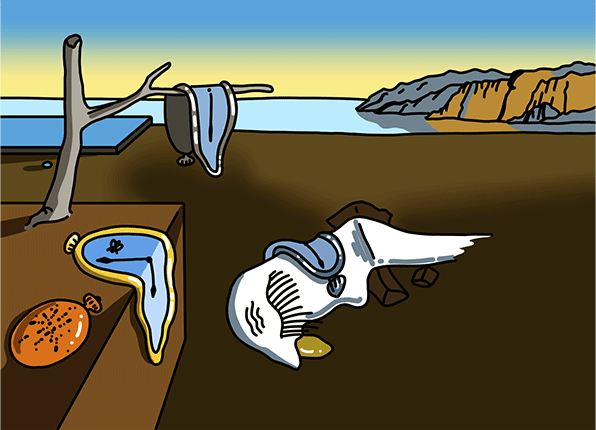
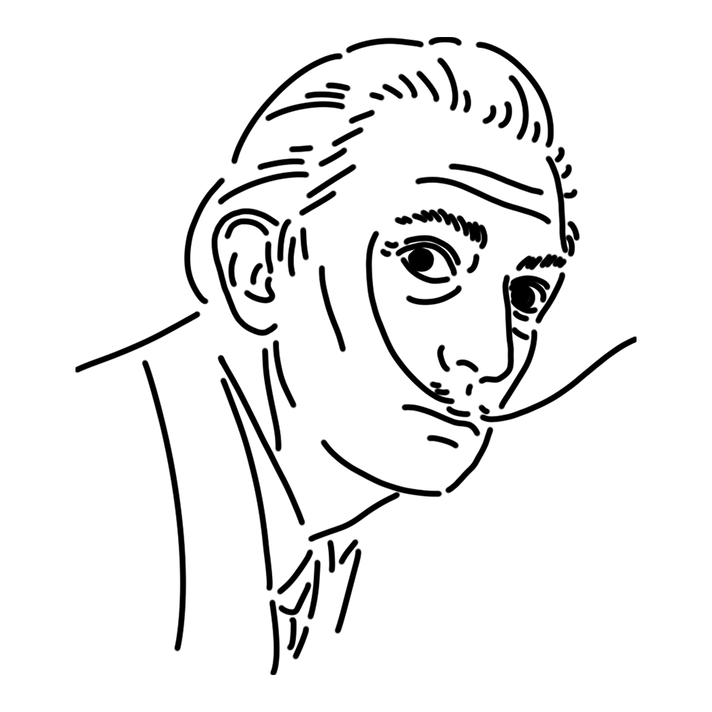

シュルレアリスムのトップスター、そして20世紀最大の奇人。その作品は「超現実」の名の通りあまりにも難解。本人もまるで皇帝かのごとく尊大に振る舞うが、実はとても臆病で繊細なミューズである。
スペイン
"記憶の固執"
"茹でたインゲン豆のある柔らかい構造"
"ポルト・リガトの聖母" etc.

シュルレアリスム最大の名作。小さな作品ながらも、故郷・カタルーニャ地方への思い、コンプレックス、物理学への興味などのダリを語る上で欠かせないエッセンスがこれでもかと詰め込まれている。有名な「柔らかい時計」は、溶けたカマンベールチーズに着想を得て2時間ほどで描き上げた…とはダリの談。
制作年
1931年
技法・材質
油彩、カンヴァス
寸法
24.1 cm x 33 cm
所蔵
ニューヨーク近代美術館（アメリカ）

20世紀シュルレアリスムを代表する画家。夢と現実が入り混じった風景を恐るべきテクニックで精密に描き出し、「シュルレアリスム」のイメージを確立させた。作品以外においても自らを天才と言い張り、奇抜な言動や身なりで注目を集めるなどお騒がせセレブとしても有名であった。しかしながら彼の自伝などにも書かれているように、根底にあるのは古典美術に対する敬意であり、描写力は徹底した勉強に裏打ちされたものである
1904年5月11日
January 23, 1989
1989年1月23日(84歳没)